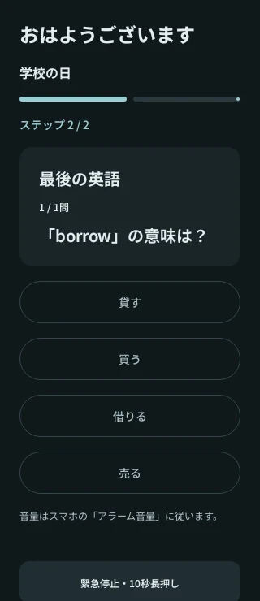
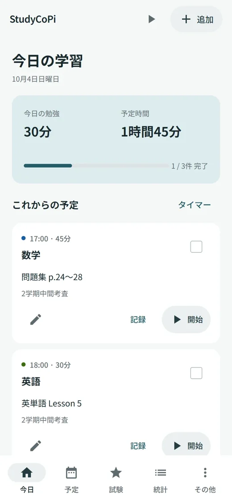
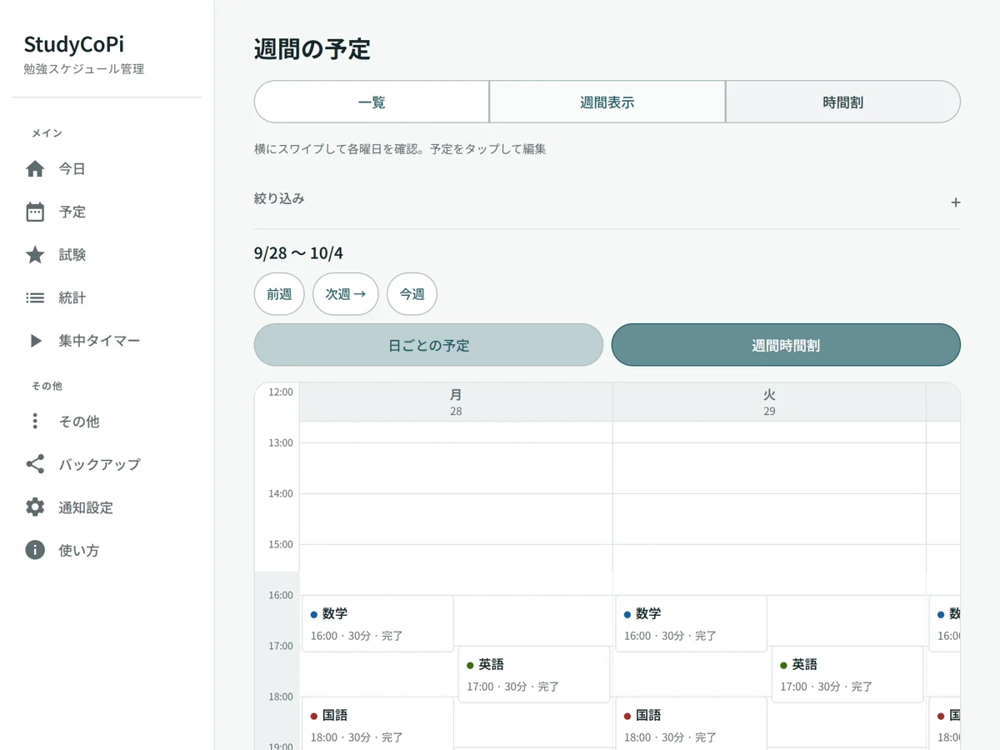
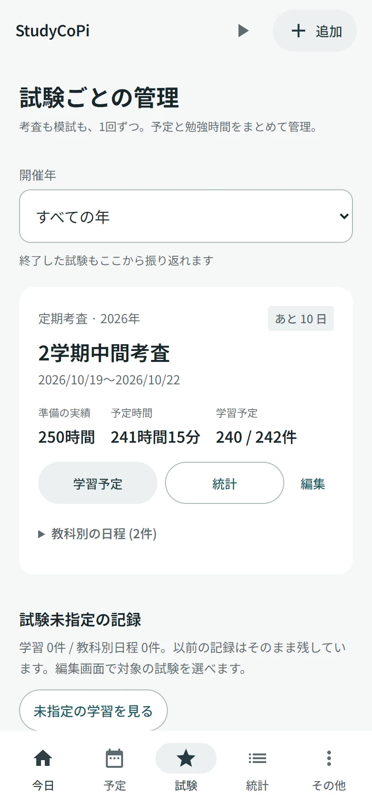
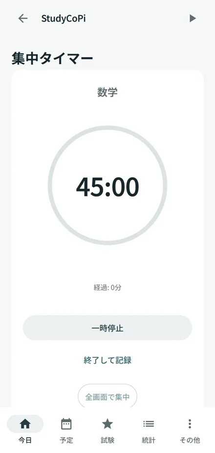
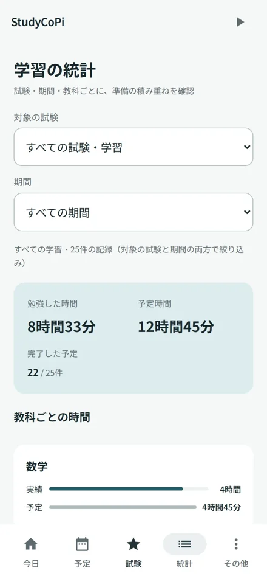
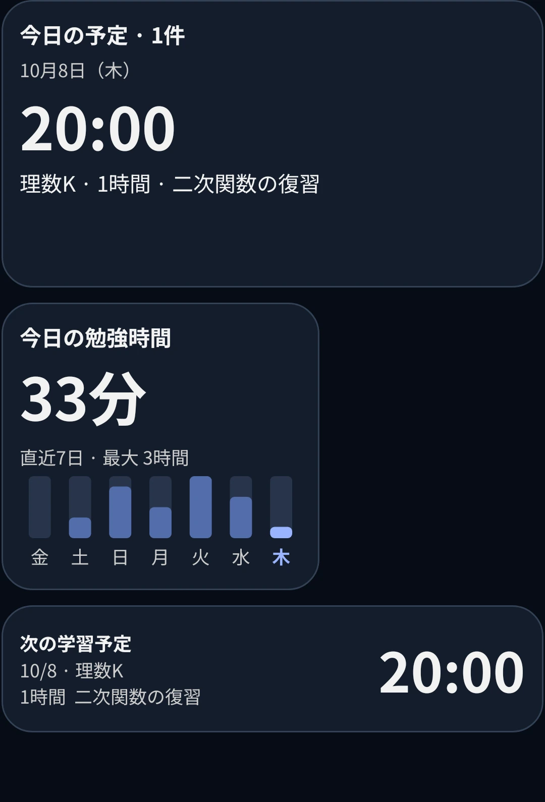

二段階の目覚まし
数学・英語・世界史の問題を解いて解除。二段階目は、別の場所に置いたNFCタグや対応するICカードを読みに行く設定にもできます。
NFC対応スマホが必要です。交通系ICカードなども、毎回同じ識別IDを読み取れるものなら使えます。


考査も、模試も、日々の復習も。
必要な画面を選んで、できることを見てみよう。
教科・日時・勉強時間を決めて予定を追加。一覧と時間割を切り替えて、空いている時間を探せます。
短い予定にも教科名を表示。予定を押すと、内容の確認や編集ができます。

中間考査、期末考査、模試を別々に登録。教科ごとの日程や範囲、準備に使った勉強時間をまとめられます。
予定を追加するときに「対象の試験」を選ぶと、その試験の実績につながります。

予定からそのままタイマーを開始。休憩は「一時停止」、終わったら「終了して記録」。測った時間を実績に残せます。
予定を作っていない勉強も、「その他 → 集中タイマー」から始められます。

教科・期間・試験で絞り込み、実際に勉強した時間を確認。予定と実績を見比べて、次の一週間を調整できます。
タイマーを使わなかった日も、「記録」から時間を手入力できます。

試験を登録せず、今日の勉強だけでも始められます。
手順 1 / 4 · 実際のWeb版 · サンプルデータ
画面を押すと拡大できます
「今日」の右上にある「追加」を押します。教科・日時・予定時間を選び、「保存」で予定を作成。
試験対策なら「対象の試験」も選びます。普段の勉強なら未指定のままで大丈夫です。
画面の例：数学を17:00から45分。問題集 p.24〜28を進める予定です。
作った予定の「開始」を押すと、タイマーが動きます。休憩するときは「一時停止」。再開すると続きから測れます。
勉強を終えたら「終了して記録」を押してください。測った時間が、その予定の実績に残ります。
画面の例：45分の予定のうち20分が経過。休憩中なので「再開」を表示しています。
予定カードの「記録」から、実績時間と状況を確認・調整できます。タイマーを使わなかった日も、ここから手入力。
少しだけ進めたら「一部」、やり終えたら「完了」を選んで「保存」を押します。
画面の例：45分の予定に対して、実際に勉強したのは20分。「一部」として残します。
下の「統計」を開くと、予定時間と実際に勉強した時間を確認できます。試験や期間を選んで、準備の進み具合を見てみましょう。
データを残すには「その他 → バックアップ」からJSONファイルを保存。機種変更にも使えます。
画面の例：2学期中間考査の準備を集計。教科ごとの時間も確認できます。
本体でも「その他 → 使い方」から操作チュートリアルを見直せます。
数学・英語・世界史の問題を解いて解除。二段階目は、別の場所に置いたNFCタグや対応するICカードを読みに行く設定にもできます。
NFC対応スマホが必要です。交通系ICカードなども、毎回同じ識別IDを読み取れるものなら使えます。

今日の予定、勉強時間、累積時間、次の予定、目覚まし。6種類のウィジェットを、置きたい大きさで選べます。

Androidの画面固定で、ほかのアプリに移りにくく。予定時刻に集中画面へ案内するモードも選べます。
画面固定はAndroidの確認操作が必要です。タイマーは自分で開始します。バックグラウンドでは通知で案内します。
ベル・パルス・チャイムの音源を選択。Androidの目覚ましでは、端末のアラーム音や音声ファイルも使えます。
目覚ましも、集中モードも、ホーム画面のウィジェットも。
手順 1 / 5 · 実際のAndroid版 · サンプルデータ
画面を押すと拡大できます
「その他 → 目覚まし」を開き、右上の「追加」を押します。名前・時刻・繰り返す曜日・アラーム音を選びます。
音はベル・パルス・チャイムのほか、端末の音源や音声ファイルも選択できます。「音を試聴」で確認してください。
初めて使うときは、目覚まし一覧の案内から通知と正確なアラームを許可。ロック中に解除画面を開きたい場合は、全画面通知も許可します。
同じ設定画面で「問題の教科」と「問題の数（各ステップ）」を選びます。数学・英語・世界史・おまかせ（3教科）から選択できます。
「ステップ2の解除方法」は、追加の問題か登録したNFCタグ。交通系ICカードなど、NFC対応のICカードも毎回同じ識別IDを読み取れるものなら使えます。「タグを置く場所」を入力し、「NFCタグを読み取って登録」でタグやカードを読み取って保存します。
タグやカードは1階など、起きたら行く場所へ。アラームが鳴ったら最初の問題を解き、登録したものをスマホで読み取ると解除されます。登録後は目覚まし一覧の「今すぐテスト」で解除を確認してください。
予定の「開始」、または「その他 → 集中タイマー」でタイマーを始めます。実行中の画面で「画面を固定して集中」を押します。
集中モードに移ったら「画面固定を開始」を押し、Androidの確認画面で許可します。休憩は「一時停止」、終わったら「終了して記録」で固定を解除して戻ります。
画面固定は、ほかのアプリへ移りにくくする機能です。Android所定の操作でも解除できます。
「その他 → 通知設定」で「予定時刻に画面固定」をオンにします。未完了の予定の開始時刻になると、集中画面へ案内します。
アプリを開いているときはAndroidの画面固定を確認。ほかのアプリを使っている間は通知を押して開きます。
この時点ではタイマーは動きません。集中画面の「勉強を始める」を押して開始します。その回を見送るときは「今回は解除する」を選びます。
スマホのホーム画面の空いた場所を長押しし、「ウィジェット → StudyCoPi」を選びます。表示したい種類を選んでホーム画面へ追加します。
今日の予定・今日の勉強時間・両方の表示・予定時間と累積勉強時間・目覚ましの設定時間・次の予定の6種類。追加後は長押しして大きさを調整できます。
「その他 → ウィジェット」では種類とサイズの目安を確認できます。記録済みの時間を表示し、保存時や更新ボタンで反映します。追加方法やマス数はホームアプリによって異なります。
基本の使い方は共通。自分の使いやすい方で始めよう。
| できること | Web | Android |
|---|---|---|
| 予定・試験・勉強時間の管理 | 対応 | 対応 |
| タイマー・操作チュートリアル | 対応 | 対応 |
| 予定時刻の集中画面 | ページを開いている間 | 画面固定の案内・通知 |
| 二段階目覚まし・NFC解除 | なし | 対応 |
| ホーム画面ウィジェット | なし | 6種類 |
アカウント登録は不要。Web版はブラウザ内、Android版はアプリ内に保存します。自動同期はありませんが、バックアップのJSONファイルでデータを引き継げます。
Web版は、データに変更があると3日ごとにバックアップ保存を案内します。
無料で使えます。アカウント登録もいりません。
スマホ・タブレット・PCのブラウザから、そのまま使えます。
Web版を開くホーム画面に追加すれば、次からすぐ開けます。
Android 8.0以降に対応。GitHubで配布しているAPKを入れて使います。
APKをダウンロード配布版 1.4.1 · 約8.7 MB
最新リリースを確認更新するときは、最新リリースから新しいAPKをダウンロードし、そのまま上書きインストールしてください。データを残すため、先にアプリをアンインストールしないでください。更新前にバックアップを保存しておくと安心です。
自動同期はありません。「その他 → バックアップ」でJSONファイルを保存し、移したい端末で読み込んでください。別のブラウザで使うときも同じです。
「その他 → バックアップ」から保存できます。ブラウザのデータ削除、機種変更、アプリの削除をする前に、ファイルを端末外にも保管してください。
Web版ではタイマー終了時の音を選べます。スマホの目覚ましとして使う二段階アラームやNFC解除は、Android版の機能です。
NFC対応のICカード（交通系ICカードなど）も、毎回同じ識別IDを読み取れるものなら使えます。登録時に「NFCタグを読み取って登録」を押し、スマホの背面にカードを近づけてください。
すべてのカードで使えるわけではありません。IDを読めないカードや、読み取るたびにIDが変わるカードは使えません。登録後は目覚まし一覧の「今すぐテスト」で、同じカードで解除できるか確認してください。
氏名・残高・利用履歴など、カードに保存された情報は読み取りません。登録したカードか確認するための識別IDだけを読み取り、カードへの書き込みや決済も行いません。
識別IDは端末内のアプリに保存し、外部サーバーへ送信しません。自分で書き出すバックアップのJSONファイルには、設定を引き継ぐためにこのIDも含まれます。
「その他 → 使い方」から操作チュートリアルを見直せます。不具合や要望はGitHubのIssuesへ。報告の際は、個人の予定やバックアップファイルをそのまま公開しないでください。